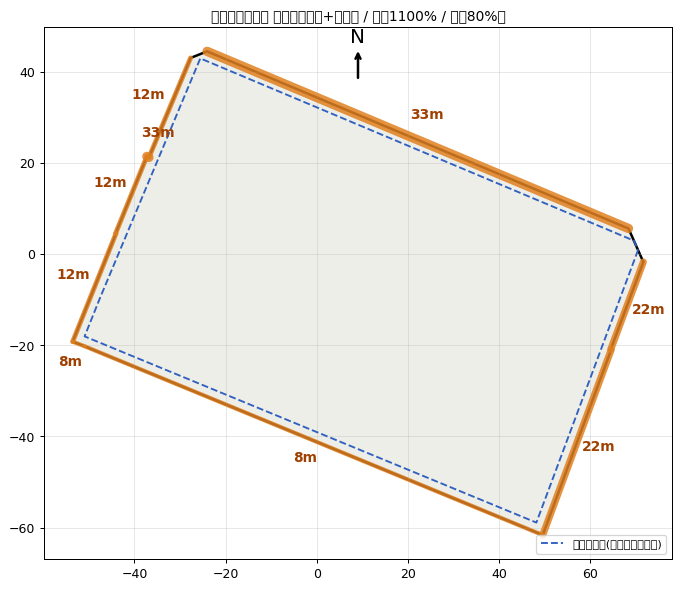
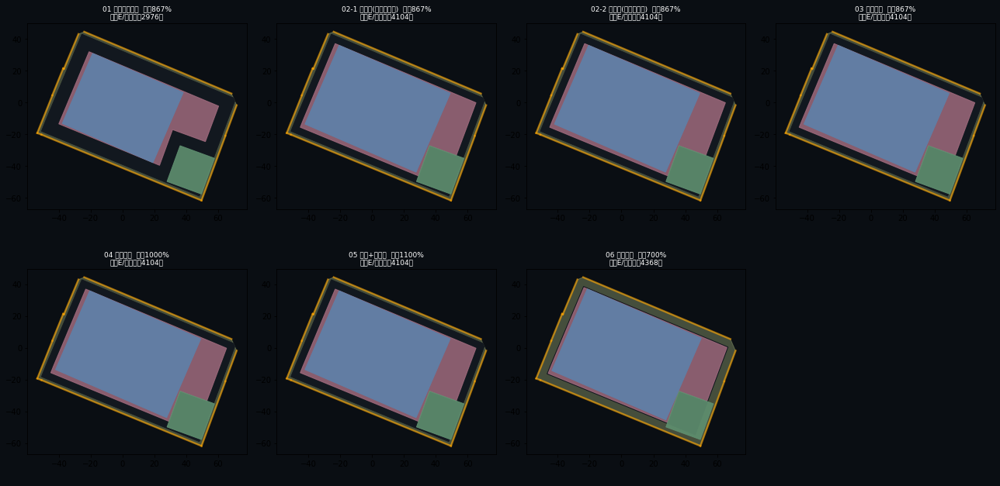
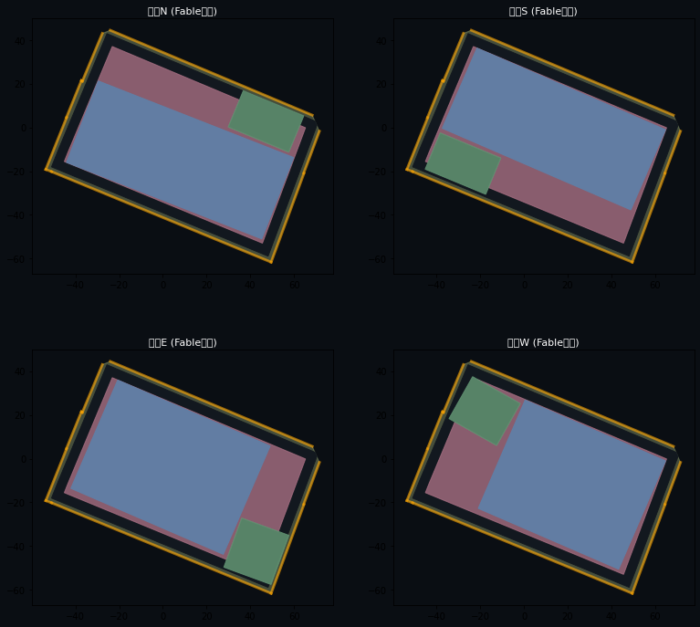
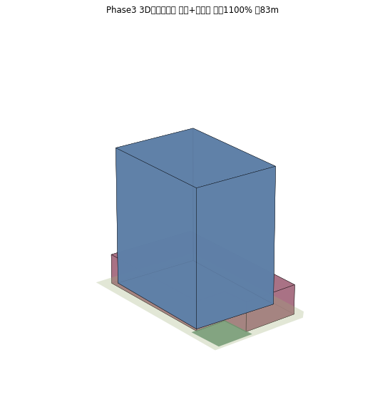

Urban Regulation × AI ／ 都市開発シミュレーター
敷地から、法規ボリューム、配棟、
そして3D都市へ。
実在街区で回した、都市開発 諸制度シミュレーターの全体フロー
― 敷地トレースから parseai（ViewSim）取り込みまで ―
1
敷地トレース
2
諸制度・容積
2.5
配棟（AI）
3
3Dボリューム
→
parseai / ViewSim
SPACEDATA ／ 都市開発ユニット
01
1
Phase 1 ― Site Trace
実地図の上で、敷地を起こす。
GSI航空写真＋建物footprint上で対象区域を描き、
道路縁の街区にスナップ
して敷地形状を確定
前面道路の
幅員・方位を自動判定
、隅切りも識別
出力＝敷地ポリゴン＋接道情報（
GeoJSON・ENU座標・origin共有
）

SITE PLAN ／ 接道(橙=幅員) ・ 壁面後退線(青破線)
02
2
Phase 2 ― Regulation & FAR
諸制度で、容積を解く。
適用可能な
都市開発諸制度
（高度利用地区／促進区／特定街区／特区／総合設計）を判定
各制度の容積率・壁面後退・高さ制限を算定し
最大容積メニュー
を選定
この街区は
特区＋促進区で容積1,100%・延床約84,000㎡
が最大

制度別 容積・配棟サマリー（全7制度）
03
2.5
Phase 2.5 ― Massing by AI
配棟は、AIがスケッチする。
壁面後退線の内側で
広場状空地とタワーの配置
を複数案、平面比較
配置判断は
生成AIが敷地平面図を見てスケッチ
、法規エンジンが基壇・歩道状空地・容積・成立性を計算
広場を街に開く「顔」としてどの街区角に取るか＝
設計者の工数を自動化
し有効案を即絞る

配棟4案 ／ 広場を4隅に振り分け（AI配置）
04
3
Phase 3 ― 3D Volume
ボリュームを、立ち上げる。
選んだ配棟を
3Dボリューム
に起こし、高さ・斜線・天空率の成立性を確認
壁面後退線内で
一定断面タワー＋低層基壇
、頂部は斜線（天空率で突破）
特区＋促進区案＝
タワー約83m

Phase3 3Dボリューム ／ 基壇＋タワー＋広場
05
→
Integration ― parseai / ViewSim
parseai の3D都市へ、
origin一枚で
接続する。
Phase3のボリューム（基壇＋タワー、ENU座標＋高さ）を
origin（緯度経度）共有
で ViewSim シーン形式に変換
周辺の
PLATEAU 3D都市モデル
と重ね、眺望・日影・景観を検討
接続の要＝
1枚のENUアダプタ
（GeoJSON→ENU、origin共有）。取り込み経路を実装済
Phase3 → ViewSim（lod1：footprint＋高さ）
今後：用途別階高・コア・外装をViewSimのマテリアルへ、photorealizeで実景合成。
敷地トレース → 法規ボリューム → 配棟(AI) → 3D → parseai ／ GeoJSON・ENU・origin を一貫共有
06